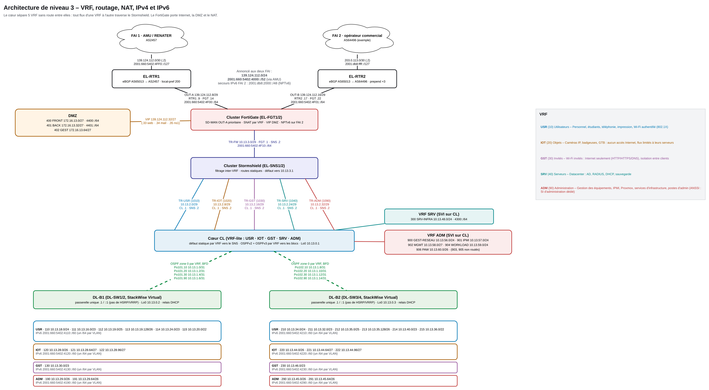

Site de Marseille · IUT Génie Télécom, Luminy · RudyLink Infrastructure · 15/11/2026
Points 03, 05 et 07 · VRF, routage IPv4/IPv6, bordure BGP, NAT, filtrage entre zones, services IP

| VRF | Id | Rôle | Présente sur | Résumés IPv4 | Résumés IPv6 |
|---|---|---|---|---|---|
| USR | 10 | Personnel, étudiants, téléphonie, impression, Wi-Fi authentifié (802.1X) | CL, DL-B1, DL-B2 | 10.13.16.0/21 10.13.24.0/22 10.13.32.0/21 10.13.40.0/22 | 2001:660:5402:4110::/60 2001:660:5402:4210::/60 |
| IOT | 20 | Caméras IP, badgeuses, GTB : aucun accès Internet, flux limités à leurs serveurs | CL, DL-B1, DL-B2 | 10.13.28.0/24 10.13.44.0/24 | 2001:660:5402:4120::/60 2001:660:5402:4220::/60 |
| GST | 30 | Wi-Fi invités : Internet seulement (HTTP/HTTPS/DNS), isolation entre clients | CL, DL-B1, DL-B2 | 10.13.30.0/23 10.13.46.0/23 | 2001:660:5402:4130::/60 2001:660:5402:4230::/60 |
| SRV | 40 | Datacenter : AD, RADIUS, DHCP, sauvegarde | CL | 10.13.48.0/22 | 2001:660:5402:4300::/60 |
| ADM | 90 | Gestion des équipements, IPMI, Proxmox, services d'infrastructure, postes d'admin (ANSSI : SI d'administration dédié) | CL, DL-B1, DL-B2 | 10.13.29.0/24 10.13.45.0/24 10.13.56.0/21 | 2001:660:5402:4190::/60 2001:660:5402:4290::/60 2001:660:5402:4900::/60 |
Pourquoi des VRF plutôt que des ACL sur le cœur : une erreur d'ACL ouvre un flux, alors qu'entre deux VRF il n'existe aucune route. Le filtrage est fait par un vrai pare-feu (états, journaux, IPS), et le cœur reste simple. C'est le cloisonnement demandé par le guide ANSSI sur l'administration sécurisée (SI d'administration séparé) et par la note sur l'interconnexion des objets connectés.
| Où | Passerelle | Redondance |
|---|---|---|
| VLAN des blocs (1xx, 2xx) | SVI .1 / ::1 sur DL-B1 ou DL-B2 | StackWise Virtual : une seule passerelle logique, reprise en < 1 s si un DL tombe ; pas de HSRP/VRRP nécessaire |
| VLAN 300 et 9xx | SVI .1 / ::1 sur CL | StackWise Virtual |
| DMZ 400-402 | FortiGate .1 / .33 / .65 | FGCP : adresse virtuelle et MAC virtuelle reprises par le passif |
| Services DMZ publiés | VIP Caddy 172.16.13.10 (keepalived/VRRP entre DM-RP1 et DM-RP2) | VRRP, préemption désactivée |
| Teleport | VIP 10.13.59.40 (keepalived entre les deux LXC) | VRRP |
| Clients IPv6 | fe80::1 annoncée par RA (priorité high, durée 1800 s) | identique sur toutes les SVI |
Politique par défaut : tout refuser et journaliser. Seuls ces flux sont ouverts.
| Source | Destination | Autorisé |
|---|---|---|
| USR | SRV | AD (Kerberos, LDAPS, SMB), DNS, DHCP relayé, RADIUS non (seuls les switchs/WLC parlent RADIUS) |
| USR | Internet | HTTP/HTTPS, DNS via les résolveurs internes, NTP via chrony ; SNAT .64/28 |
| USR | DMZ | HTTPS vers Caddy (site, applications), SMTP soumission/IMAPS vers MAIL1 |
| USR | IOT / ADM / GST | interdit |
| IOT | SRV | Caméras → enregistreur, badgeuses → serveur de contrôle d'accès, DHCP/NTP |
| IOT | Internet | interdit (mises à jour poussées depuis l'administration) |
| GST | Internet | HTTP/HTTPS, DNS seulement ; SNAT .88/29 ; débit limité |
| GST | tout le reste | interdit |
| SRV | Internet | Mises à jour (proxy), synchronisation eduroam ; SNAT .80/29 |
| ADM (Teleport, PAW) | toutes les gestions | SSH, HTTPS, SNMP, API des équipements : uniquement depuis Teleport 10.13.59.40-42 |
| toutes les VRF | ADM services | DHCP relayé vers Kea, NTP (chrony), syslog et traps SNMP vers la VM supervision |
| Internet | DMZ | VIP : 443/80 → Caddy, 25 → MAIL1, 53 → DNS1 ; 443 VPN SSL admin → FortiGate |
| DMZ | interne | interdit sauf DM-MAIL1 → AD (LDAPS) et DM-SRV1 → SRV (port applicatif précis) |
| Paramètre | Valeur |
|---|---|
| Processus | OSPFv3 avec deux address-families, IPv4 et IPv6 (RFC 5838), un processus par VRF : 10 = USR, 20 = IOT, 30 = GST, 90 = ADM |
| Zone | Zone 0 unique par VRF : 2 routeurs logiques et ~15 préfixes par VRF, un découpage en zones n'apporte rien |
| Router-id | Loopback0 : CL 10.13.0.1, DL-B1 10.13.0.2, DL-B2 10.13.0.3 |
| Interfaces | passive-interface default ; actives : sous-interfaces Po101.x / Po102.x (type point-to-point) |
| Liens | /31 IPv4 et /127 IPv6 ; MTU 9198 ; BFD 300 ms × 3 |
| Authentification | OSPFv3 avec trailer d'authentification HMAC-SHA-256 (RFC 7166, key-chain), IPv4 comme IPv6 |
| Route par défaut | le cœur l'injecte dans chaque VRF (default-information originate), seulement si sa route statique vers le Stormshield est présente |
| Convergence | panne d'un membre SVL ou d'un lien : agrégat, pas de recalcul OSPF ; panne d'un bloc : BFD < 1 s |
Pas de routage dynamique avec les pare-feu (règle ANSSI : la table d'un pare-feu ne doit pas pouvoir être modifiée depuis le réseau interne).
| VRF | Sur CL (vers le Stormshield) | Sur le Stormshield (vers CL) |
|---|---|---|
| USR | 0.0.0.0/0 → 10.13.2.2 ::/0 → 2001:660:5402:4F21::2 | 10.13.16.0/21 → 10.13.2.1 10.13.24.0/22 → 10.13.2.1 10.13.32.0/21 → 10.13.2.1 10.13.40.0/22 → 10.13.2.1 2001:660:5402:4110::/60 → 2001:660:5402:4F21::1 2001:660:5402:4210::/60 → 2001:660:5402:4F21::1 |
| IOT | 0.0.0.0/0 → 10.13.2.18 ::/0 → 2001:660:5402:4F22::10 | 10.13.28.0/24 → 10.13.2.17 10.13.44.0/24 → 10.13.2.17 2001:660:5402:4120::/60 → 2001:660:5402:4F22::9 2001:660:5402:4220::/60 → 2001:660:5402:4F22::9 |
| GST | 0.0.0.0/0 → 10.13.2.34 ::/0 → 2001:660:5402:4F23::18 | 10.13.30.0/23 → 10.13.2.33 10.13.46.0/23 → 10.13.2.33 2001:660:5402:4130::/60 → 2001:660:5402:4F23::17 2001:660:5402:4230::/60 → 2001:660:5402:4F23::17 |
| SRV | 0.0.0.0/0 → 10.13.2.50 ::/0 → 2001:660:5402:4F24::26 | 10.13.48.0/22 → 10.13.2.49 2001:660:5402:4300::/60 → 2001:660:5402:4F24::25 |
| ADM | 0.0.0.0/0 → 10.13.2.66 ::/0 → 2001:660:5402:4F29::34 | 10.13.29.0/24 → 10.13.2.65 10.13.45.0/24 → 10.13.2.65 10.13.56.0/21 → 10.13.2.65 2001:660:5402:4190::/60 → 2001:660:5402:4F29::33 2001:660:5402:4290::/60 → 2001:660:5402:4F29::33 2001:660:5402:4900::/60 → 2001:660:5402:4F29::33 |
Stormshield : route par défaut 0.0.0.0/0 → 10.13.3.1 et ::/0 → 2001:660:5402:4F10::1 (FortiGate). FortiGate : 10.13.0.0/16 et 2001:660:5402:4000::/52 (sauf DMZ) → 10.13.3.2 / 2001:660:5402:4F10::2.
| EL-RTR1 (FAI 1) | EL-RTR2 (FAI 2) | |
|---|---|---|
| Voisin | AS2457, 139.124.112.1 et 2001:660:5402:4FF0:: | AS64496, 203.0.113.1 et 2001:db8:ffff:: |
| Annonce | 139.124.112.0/24, 2001:660:5402:4000::/52 | 139.124.112.0/24 (prepend ×3, LOA de l'AMU), 2001:db8:2000::/48 non annoncé (PA) |
| Reçu | route par défaut seulement (v4 + v6) | route par défaut seulement |
| Préférence sortante | local-pref 200 | local-pref 100 |
| Filtres | prefix-list sortante stricte (pas de transit), entrée : bogons refusés, max-prefix | idem |
| Protection | TTL security (GTSM), MD5/TCP-AO avec l'opérateur, uRPF strict côté opérateur | idem |
| Vers le FortiGate | statiques 139.124.112.32/27 et .64/26 → .14 ; ::/0 côté LAN → 4F00::e | statiques → .22 ; 4F01::e |
FortiGate SD-WAN : deux membres (OUT-A via 139.124.112.9, OUT-B via .17), règle « priorité au FAI 1 » avec sonde SLA (ping et HTTP toutes les 500 ms vers deux cibles). Si OUT-A perd la sonde, le trafic passe sur OUT-B en quelques secondes. Les flux publiés (VIP) restent possibles par les deux chemins.
IPv6 en secours : le /52 AMU n'est routé que par l'AMU. Si le FAI 1 tombe, le FortiGate traduit le préfixe interne vers le préfixe du FAI 2 (NPTv6, RFC 6296, 2001:db8:2000::/48) sans état, puis revient au natif quand le FAI 1 revient.
| Type | Source / adresse interne | Adresse publique | Remarque |
|---|---|---|---|
| SNAT (PAT) | VRF USR | 139.124.112.64/28 | pool overload, journaux conservés 1 an |
| SNAT (PAT) | VRF SRV, ADM | 139.124.112.80/29 | |
| SNAT (PAT) | VRF GST | 139.124.112.88/29 | séparé pour la traçabilité |
| VIP 1:1 | 172.16.13.10 (VIP Caddy) | 139.124.112.33 | 80, 443 ; IPv6 : 2001:660:5402:4400::10 sans NAT |
| VIP port | 172.16.13.21 (MAIL1) | 139.124.112.34 | 25, 465, 587, 993 |
| VIP port | 172.16.13.20 (DNS1) | 139.124.112.35 | 53 TCP/UDP (DNS public faisant autorité) |
| Local | FortiGate | 139.124.112.36 | VPN SSL/IPsec des administrateurs, puis Teleport |
| IPv6 | tout le site | — | aucun NAT (adresses globales), sauf NPTv6 en secours sur le FAI 2 |
| VLAN | Attribution | Drapeaux RA | Détail |
|---|---|---|---|
| Usagers filaires et Wi-Fi (USR) | SLAAC + DHCPv6 sans état | A=1, M=0, O=1 | DNS par RDNSS (RFC 8106) et DHCPv6 ; adresses temporaires autorisées |
| Invités (GST) | SLAAC | A=1, M=0, O=0 | DNS par RDNSS |
| Objets (IOT) | DHCPv6 avec état (Kea, réservations DUID) ou IPv4 seul | A=0, M=1 | selon le support des équipements |
| Serveurs, admin, DMZ | statique | A=0, M=0 | terminaison identique à l'IPv4 |
| Liens point à point | /127 | RA supprimées | RFC 6164 ; un /64 réservé par lien |
ICMPv6 indispensable autorisé sur les pare-feu (RFC 4890 : Packet Too Big, ND, échos limités). RA guard et DHCPv6 guard sur l'accès (voir L2).
| Service | Serveurs | Configuration réseau |
|---|---|---|
| DHCPv4 usagers | DT-DHCP1/2 10.13.48.31-32 (basculement) | ip helper-address sur les SVI USR des DL (le relais traverse le Stormshield USR → SRV) |
| DHCP IOT, GST, ADM | Kea 10.13.59.11-12 (haute dispo hot-standby) | ip helper-address ; option 43 pour les bornes (adresse du WLC 10.13.59.60) |
| DHCPv6 | DT-DHCP (USR, sans état), Kea (IOT) | ipv6 dhcp relay destination |
| DNS | AD 10.13.48.11-12 pour les usagers ; Unbound 10.13.59.31-32 pour l'infrastructure ; DM-DNS1 public | résolution Internet par les Unbound uniquement |
| NTP | chrony 10.13.59.21-22 (sources : ntp RENATER et GPS/NTS) | tous les équipements, authentifié |
| Journaux et supervision | VM supervision 10.13.59.50 (syslog, traps, LibreNMS) | source = Loopback0 ou interface de gestion |
| AAA équipements | DT-RAD1/2 (RADIUS) ou TACACS+ | source Loopback0, VRF ADM |
! ===== CL (cœur, IOS-XE) : VRF et route par défaut vers le Stormshield vrf definition USR address-family ipv4 address-family ipv6 ! interface Vlan1010 description TR-USR vers EL-SNS vrf forwarding USR ip address 10.13.2.1 255.255.255.248 ipv6 address 2001:660:5402:4F21::1/64 ! interface Port-channel101.10 description DL-B1 VRF USR encapsulation dot1Q 10 vrf forwarding USR ip address 10.13.1.0 255.255.255.254 ipv6 address 2001:660:5402:4F31::/127 ip ospf network point-to-point bfd interval 300 min_rx 300 multiplier 3 ! ip route vrf USR 0.0.0.0 0.0.0.0 10.13.2.2 name SNS ipv6 route vrf USR ::/0 2001:660:5402:4F21::2 ! router ospfv3 10 router-id 10.13.0.1 address-family ipv4 unicast vrf USR passive-interface default no passive-interface Port-channel101.10 no passive-interface Port-channel102.10 default-information originate address-family ipv6 unicast vrf USR passive-interface default no passive-interface Port-channel101.10 no passive-interface Port-channel102.10 default-information originate
! ===== DL-B1 : passerelle d'un VLAN usager interface Vlan111 description ETU-B1 vrf forwarding USR ip address 10.13.16.1 255.255.254.0 ip helper-address 10.13.48.31 ip helper-address 10.13.48.32 ipv6 address FE80::1 link-local ipv6 address 2001:660:5402:4111::1/64 ipv6 nd other-config-flag ipv6 nd router-preference High ipv6 dhcp relay destination 2001:660:5402:4300::31 ip access-group ETU-VERS-PERS in
! ===== EL-RTR1 : BGP vers AMU / RENATER router bgp 65013 bgp router-id 139.124.112.2 neighbor 139.124.112.1 remote-as 2457 neighbor 139.124.112.1 ttl-security hops 1 neighbor 139.124.112.1 password 7 ******** neighbor 2001:660:5402:4FF0:: remote-as 2457 address-family ipv4 network 139.124.112.0 mask 255.255.255.0 neighbor 139.124.112.1 prefix-list SORTIE-V4 out neighbor 139.124.112.1 prefix-list DEFAUT-SEUL in neighbor 139.124.112.1 route-map LP200 in address-family ipv6 network 2001:660:5402:4000::/52 neighbor 2001:660:5402:4FF0:: activate neighbor 2001:660:5402:4FF0:: prefix-list SORTIE-V6 out ! ip route 139.124.112.0 255.255.255.0 Null0 tag 666 ip route 139.124.112.32 255.255.255.224 139.124.112.14 ip route 139.124.112.64 255.255.255.192 139.124.112.14 ip prefix-list SORTIE-V4 permit 139.124.112.0/24
# ===== FortiGate : SD-WAN, FAI 1 prioritaire
config system sdwan
set status enable
config members
edit 1 set interface "OUT-A" set gateway 139.124.112.9 next
edit 2 set interface "OUT-B" set gateway 139.124.112.17 next
end
config health-check
edit "internet" set server "193.51.24.1" "9.9.9.9" set members 1 2 set interval 500 next
end
config service
edit 1 set name "FAI1-prioritaire" set mode priority set priority-members 1 2 set health-check "internet" next
end
end
| Test | Résultat attendu |
|---|---|
| Couper un membre du cœur (CL-SW1) | aucune perte de route ; < 1 s de coupure (agrégats) |
| Couper DL-SW1 | le bloc 1 reste joignable par DL-SW2, passerelle inchangée |
| Couper le FAI 1 | SD-WAN bascule sur OUT-B en < 3 s ; IPv6 sort en NPTv6 |
| Basculer le FortiGate ou le Stormshield actif | sessions conservées (synchronisation des sessions) |
| Un poste étudiant tente SSH vers 10.13.56.0/24 | refusé et journalisé par le Stormshield (pas de route USR → ADM au cœur) |
| Un invité tente d'atteindre 10.13.48.11 | refusé |
| Éteindre NM-PVE1 | Kea, NTP, DNS, Teleport toujours servis par NM-PVE2 ; VM supervision et WLC redémarrées en ~2 min |
| traceroute et ping v4/v6 de chaque VLAN vers Internet | sortie par l'adresse SNAT prévue ; IPv6 sans NAT |